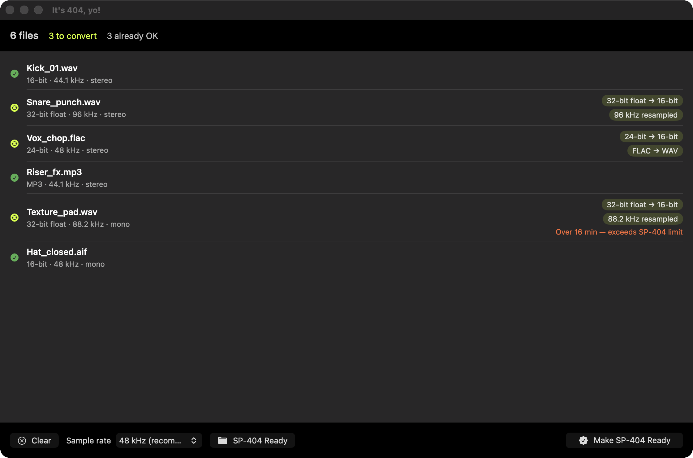

Drop a whole pack. Get it back in exactly the format your SP-404 MkII accepts. No DAW, no Terminal, no cryptic “Unsupported File.”
One-time purchase · works offline · your samples never leave your Mac

Pro and Splice packs are usually 32-bit float WAVs, often 96 kHz, sometimes FLAC. The SP-404 MkII rejects them with a cryptic error and no explanation. Fixing them by hand in a DAW, one file at a time, is miserable across hundreds of samples.
Guides: Why the SP-404 says “Unsupported File” · Convert 32-bit float WAV · FLAC to WAV
Drag in a folder or files, your whole sample pack at once.
Every file is analyzed with a plain-language reason: “32-bit float → 16-bit”, “96 kHz resampled”, “FLAC → WAV”.
One click. Converted files land in a new folder, your structure preserved, ready for the SD card.
One job, done well.
Hundreds of samples in one drag, not file by file in a DAW.
It tells you exactly why each file would fail, something the SP-404 never does.
Your folders come out the same way they went in.
Files that already work are copied untouched.
No account, no cloud. Your samples never leave your Mac.
Built with Core Audio. No Terminal, no ffmpeg, no fuss.
The documented format the SP-404 MkII accepts on SD-card import.
| Codec | Linear PCM WAV |
| Bit depth | 16-bit, fixes 32-bit float, 24-bit, … |
| Sample rate | 48 kHz (or 44.1 kHz), resamples anything else |
| Channels | Mono / stereo preserved |
| Metadata | Exotic chunks stripped via a clean re-write |
Most often the file is 32-bit float (common in pro/Splice packs), an unusual sample rate, or a format like FLAC. The SD-card import only accepts 16-bit linear WAV/AIFF/MP3, so anything else is rejected without explanation. Full explanation →
No. Files that already import cleanly are copied untouched, no quality loss, no needless re-encoding.
48 kHz matches the SP-404 MkII’s internal rate (zero on-device resampling). 44.1 kHz is also accepted. You choose; the app handles the rest.
WAV, AIFF, MP3, M4A, AAC and FLAC, folders or individual files, your whole pack at once. Anything that isn’t already SP-404-safe is converted to 16-bit linear PCM WAV; files that already import cleanly are copied untouched.
No. The SP-404 MkII runs internally at 16-bit / 48 kHz and conforms every import to that anyway, so a 32-bit float or 24-bit file gets reduced to 16-bit on the device regardless. Converting first just makes it import cleanly; 16-bit still carries about 96 dB of dynamic range, well beyond what a groovebox needs.
They follow different rules. Direct SD-card import accepts only 16-bit linear WAV/AIFF/MP3, anything else risks “Unsupported File.” The official SP-404MK2 app accepts more (it adds FLAC and M4A) and down-converts on its own. This app targets the stricter SD-card path, so your samples import cleanly either way.
Never. Everything runs offline on your Mac. There’s no account, no cloud, no tracking.
Today it’s tuned for the Roland SP-404 MkII. More device profiles may follow.